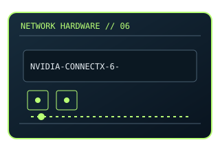

[ MODEL-SPECIFIC NETWORK HARDWARE ]
NVIDIA ConnectX-6 Dx MCX623106AN-CDAT
Two-port high-speed Ethernet adapter for server and storage fabrics. This entry uses the labeled manufacturer model identifier and cites primary product/support documentation.

MODEL IDENTIFICATION: Match the complete model/part number and hardware revision on the item label to manufacturer documentation. Do not apply this entry to near-name variants.
Exact specifications and compatibility
| Cataloged model | NVIDIA ConnectX-6 Dx MCX623106AN-CDAT |
|---|---|
| Dedicated subcategory | 10 Gigabit and server adapters |
| Bus / host interface | PCI Express Gen 4 x16 add-in card. |
| Ports / physical interfaces | 2 × QSFP56 ports; media/cables are selected for the target link. |
| PHY, radio or protocol | ConnectX-6 Dx Ethernet adapter with hardware offloads; feature enablement depends on driver/firmware. |
| PoE | No PoE input or PoE output is documented for this product. |
| Link-rate vs throughput | Up to 100 Gb/s per port, subject to configured mode and peer/media support. No measured throughput asserted. Link rates are nominal negotiated/PHY specifications, not measured application throughput; no measured specimen result is claimed. |
| Firmware / driver support | NVIDIA networking firmware and OFED/inbox driver support varies by OS release. |
| Compatibility checks | Check exact board part, PCIe slot, firmware compatibility and supported transceiver list. |
Model-specific notes
Physical port capability does not guarantee application throughput.
Primary manufacturer sources
- NVIDIA ConnectX-6 Dx product documentationManufacturer product specification or documentation for the exact model/family.
- Manufacturer support and compatibility resourcesFirmware, driver, compatibility, revision or support details; applicability may depend on the exact hardware revision and region.
Vendor maximum rates are not test results. Confirm regional variants, hardware revision and current support status with the manufacturer.